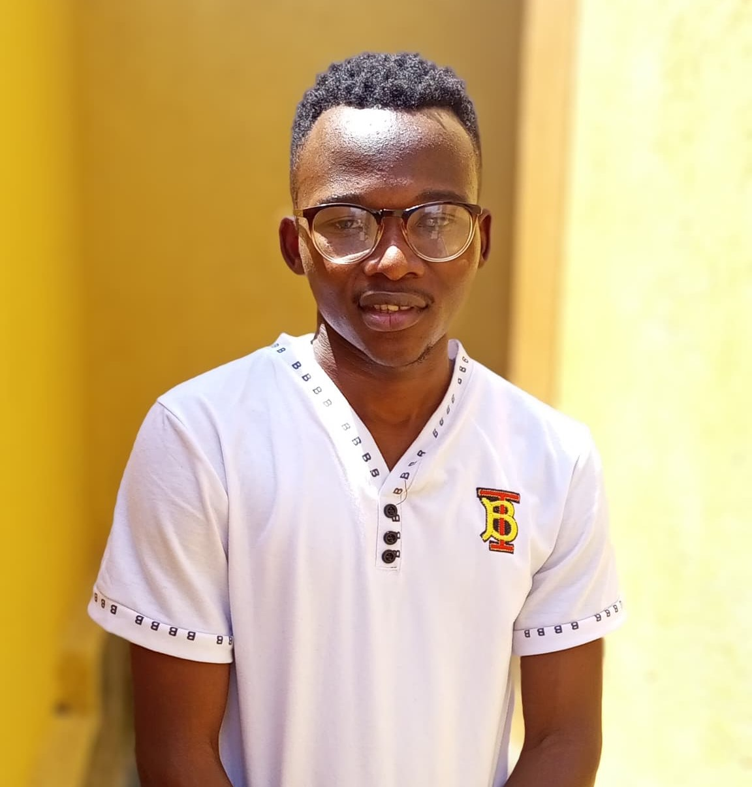

Bwambale Chris | WDD 130
My name is Chris Bwambale, and I am from Kampala, Uganda. I am a member of The Church of Jesus Christ of Latter-day Saints, where I strive to live by the
teachings of Jesus Christ and serve my community. I am passionate about learning and sharing knowledge, and I believe in the power of faith, family, and service.
I hope to make a positive impact in my country and beyond, through both my personal growth and contributions to those around me.